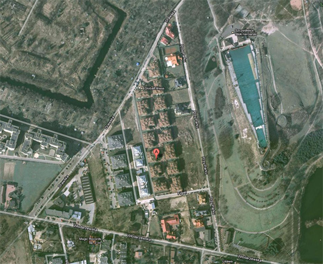

Warszawa - Ochota, ul. Drawska 14d
Ogrody Shiraz
Mieszkanie zlokalizowane jest na warszawskiej Ochocie na kameralnym osiedlu,
które graniczy z Parkiem Szczęśliwickim.
Osiedle Ogrody Shiraz jest bardzo czyste, spokojne, bezpieczne.
Teren ogrodzony i monitorowany (tak samo garaż), dużo zieleni i pięknych kwiatów, brak ruchu kołowego na terenie osiedla.
Kompleks niskich budynków zanurzonych w zieleni, oaza ciszy i spokoju.
Bliskość Parku Szczęśliwickiego, liczne tereny spacerowe, dobry dojazd do centrum,
powodują, iż jest to pożądana przez wielu klientów lokalizacja.
Dodatkowo niecałą minutę od mieszkania "
Rynek Włodarzy" - bazar ze świeżym pieczywem, zrdową żywnością, owocami i wszystkim tym co do życia niezbędne :)
